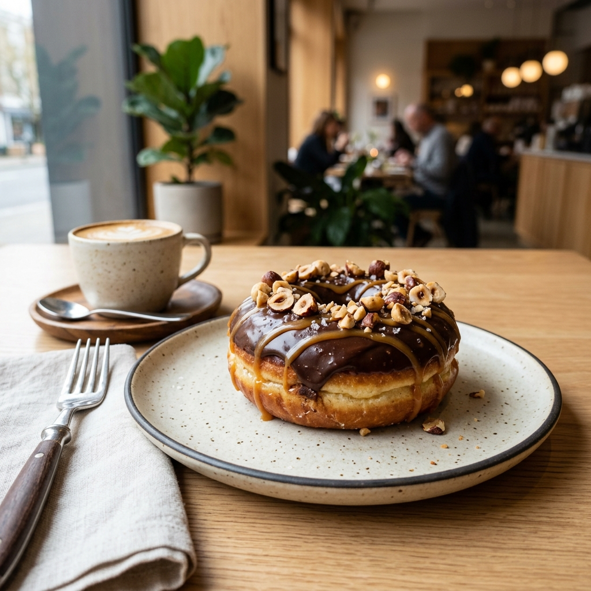

La Marque
Née d'une passion pour la street food et d'un rêve tunisien, YOYO est devenue la référence food du pays.
Les Origines
En 2019, au cœur de Tunis, une idée simple mais audacieuse prend forme : créer un lieu où la street food rencontre la gourmandise. Les fondateurs de YOYO, passionnés de cuisine et de culture urbaine, ouvrent leur premier point de vente avec une mission claire — offrir des boules gaufres, pizzas et panuozzo d'une qualité exceptionnelle dans une ambiance créative et chaleureuse.
Le succès est immédiat. Le bouche-à-oreille, amplifié par les réseaux sociaux, transforme YOYO en phénomène viral. Les files d'attente deviennent la norme, et le logo jaune et noir devient un symbole reconnu dans tout le pays.

Notre Parcours
Ouverture du tout premier point de vente YOYO à Tunis. Le concept est simple : des desserts artisanaux, une identité visuelle forte, et une expérience client inoubliable.
YOYO explose sur Instagram et TikTok. Les vidéos de préparation de boules gaufres et pizzas deviennent virales, attirant des milliers de nouveaux clients. Lancement de la livraison via Glovo.
Ouverture de 2 nouveaux points de vente au Lac 1 et à La Marsa. L'équipe passe de 5 à 25 collaborateurs. Le menu s'enrichit avec les gaufres belges et les burgers signature.
Lancement du programme de franchise. Le Bardo et Monastir rejoignent le réseau. YOYO franchit le cap des 150 000 clients satisfaits et obtient une note de 4.8★ sur Glovo.
Avec plus de 1.7 million de followers sur les réseaux sociaux, YOYO prépare son expansion dans de nouvelles villes tunisiennes et pose les bases d'une ambition internationale.
Ce qui nous définit
Chaque donut, chaque crêpe est préparé avec amour et attention aux détails. La qualité n'est jamais un compromis.
YOYO est une marque tunisienne, ancrée dans sa communauté. Nos clients ne sont pas des numéros — ce sont notre famille.
Des ingrédients soigneusement sélectionnés, des recettes testées et perfectionnées. Notre note Glovo de 4.8★ parle d'elle-même.
Du concept initial aux nouvelles saveurs, YOYO repousse les limites de la street food en Tunisie à chaque saison.
Que vous soyez un gourmand passionné ou un entrepreneur ambitieux, il y a une place pour vous dans l'aventure YOYO.